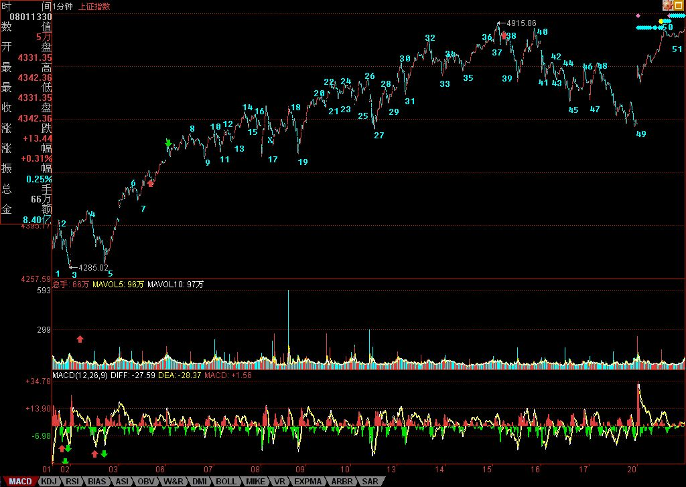

两年最大涨幅拉开泡沫化生存大幕
2007/8/20 15:48:47
大盘中长线走势的判断，都在今早的 总市值超GDP后的泡沫化生存 里。其中最后一段有必要引用如下“显然，目前市场最疯狂的状态依然没有出现，外围因素制造短期的波动反而有利于市场能量的积累。在泡沫制造能力被充分发挥之前，市场不会最终逆转，第一阶段的成分股行情不会结束。不再战略性买进、只战略性持有，等待市场疯狂、等待第一阶段长线卖点的出现，是泡沫化状态下最应采取的策略。”今天，大盘以两年最大涨幅拉开泡沫化生存大幕。
至于大盘的中短走势，在上周五已经明确说过“可以肯定地说，本周全球的恶劣走势，会引发各国金融当局的强力介入，因此，一个有力的反弹的出现，是很正常的，至于之前是否要制造空头陷阱，那并不重要。”其后的走势，基本如此，在同一文章里，已经说了，最重要是反弹后的走势，需要关注的是相关政策的有效性，一旦救市政策失效，引发全球资本市场更大规模的杀跌，并不是什么天方夜谈。
回到上海指数，从纯技术的角度，下图里的8-49可以看成是一个30分钟中枢，但更可以看成是，对于8-17这个5分钟中枢，17-38的1分钟走势5分钟背驰后，必须有一个回拉至少回到8-17这个5分钟中枢里。显然，49已经跌破14，十分完美地演绎了本ID的理论。超短线的角度，根据走势的多义性，可以把后面的走势先看成是32-41这个5分钟中枢的一个震荡，要往上突破，就要出现第三类买点，否则，别看今天涨了248点，依然只是中枢震荡。
个股方面，周五也说得很清楚了“个股上，一线成分股，将跟随外围，一旦外围走稳，将引发大反弹。二、三线股，关键是看这次资金的流入情况，但无论如何，个股行情将再次活跃。”显然，今天的走势完全与此符合。目前，行情要继续发展，必须把二、三线股点燃起来，这是今后行情是否能往纵深发展的关键，否则光拉一线大盘或者普涨走势，都不可能持续。
另外，周五用600139、600594为例子，只是说明持股的重要，如果没有做短线的本事，也没有持股的耐心，怎么可能长期战胜资本市场？不妨再举一个例子，那只唯一本ID明确说过的中字头股票600737，本ID在7月中8元时十分明确地告诉，这股票等于6元告诉你000999，纯粹就是给你准备点学费，可以安心学习。但现在又有多少人能从8元持有到现在？其实，前后也就1个月时间，如果这样都持不住，那就该干什么干什么吧。
今天有事，先下，再见。
